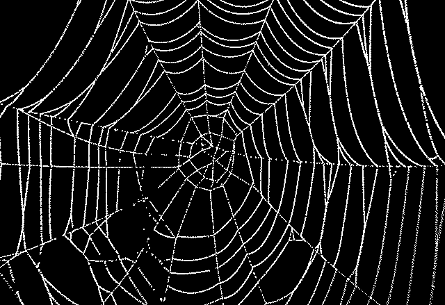

tale, n. A story or narrative, true or fictitious, drawn up so as to interest or amuse, or to preserve the history of a fact or incident; a literary composition cast in narrative form.
Little spider
The story is located in the undefined space. We see little trees, a house with a red rooftop and a chimney. The light outside is warm, it is early morning or a late afternoon.
The hand appears on the scene.
After a while, the hand starts walking towards the house. Fingers are touching the ground covered in grass and fallen leaves in a synchronized rhythm.
We are watching the hand as it approaches the facade of the house.
We hear the sound of the window being open. It is a window in the top floor of the house.
Another hand starts to emerge from the rooftop window of the house. First, we can see its fingers with bright painted fingernails, then a thumb, a wrist, forearm, elbow and finally the upper arm. The arm is so big that its fingers reach the ground with the upper arm still being inside the window.
Is this an invitation for the first hand to enter a house?
First hand, visibly smaller in comparison tot the second hand, starts slowly walking towards the huge fingers of the second hand. It climbs on its fingers. Slowly, carefully it starts to make its way up on the roof, using the second arm as a sort of a “ladder”. Every movement is careful, the hand does not want to fall. It is so high.
narrator: Kousavý pavouček vylezl na okap..
First-hand reaches the rooftop.
Suddenly we hear a tapping sound in the background.
As the sound approaches closely we see that it started raining. The second arm quickly disappears inside the house and closes the window. First hand surprised by the rain looks from side to side. It has nowhere to hide. Rain intensified. The first hand is wet and so is the roof.
narrator: Pak přišel déšt a pavoučka splách…
The little finger of the first-hand slips. It happens so quickly and now the hand is falling from the roof to the ground.
Thankfully the rain turned the ground into the soft squishy mud. Landing is soft. The hand is covered in dirt, but safe. Exhausted it lays down on the ground, waiting for the rain to pass.
The tapping of rain becomes less frequent until it disappears completely.
The light is warm again. We cannot see the sun be we know it is out.
narrator: Když vyšlo slunce a osušilo květ
We hear a cracking sound of the window being open.
Big arm emerges from the window again. Little hand, which skins is still covered with little raindrops starts enthusiastically march towards the big arm’s palm. One jump from the palm to the elbow and one big jump from the elbow to the upper arm and from there finally to the rooftop again.
narrator: Kousavý pavouček vyzezl zase zpět
Both of the hands. The big one and the small are bathing in the sun.
All is good now.